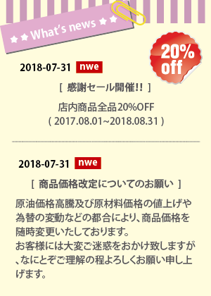
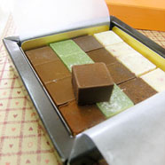

世界でたったひとつの味手作りのお菓子作りを楽しんでみませんか。
生チョコを作ろう!!
苦みの中にもほんのり甘さを効かせたおとなの味!!初めてお菓子作りに挑戦する初心者の方もだいじょうぶです。
イチゴ大福を作ろう!!
和菓子の中でも人気の高いいちご大福を、お家で簡単に作りましょう。手作りした出来立てのいちご大福は、とても美味しいです。
チュイールを作ろう!!
サクサク美味しいチュイルクッキー♥普通のクッキーより簡単で材料も少ないので初心者さんにもおすすめなんです！
所 在 地：姫路市東雲町1丁目34
TEL. FAX ：079-292-4232
営業時間：AM10：00～PM6：00
定 休 日：日曜日、祝日